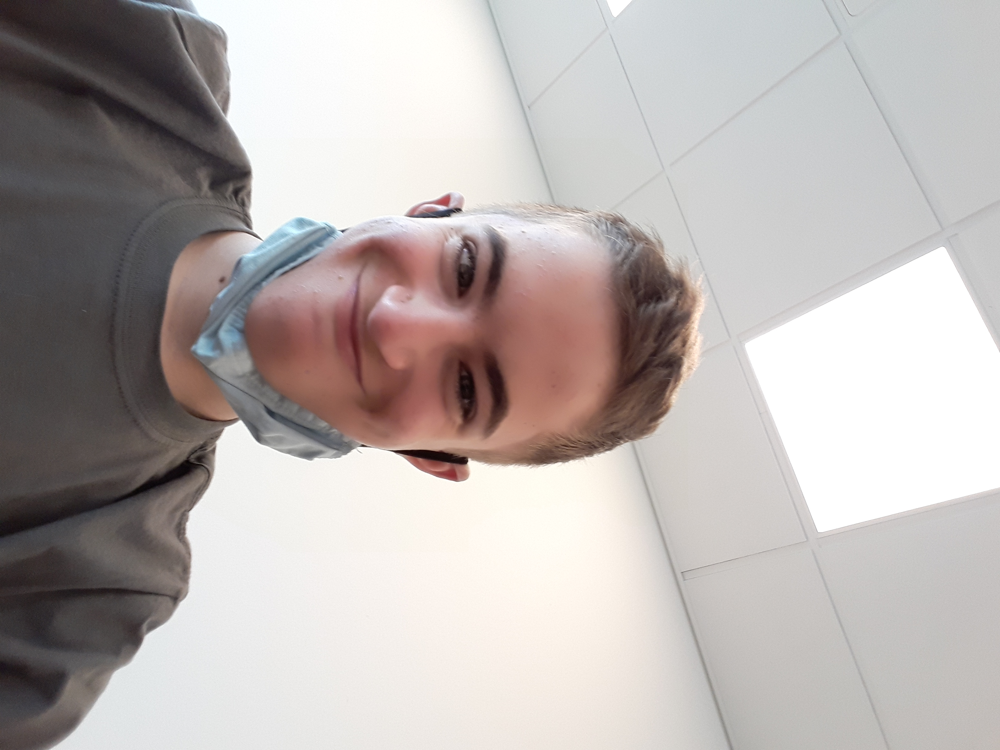
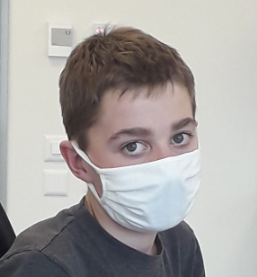
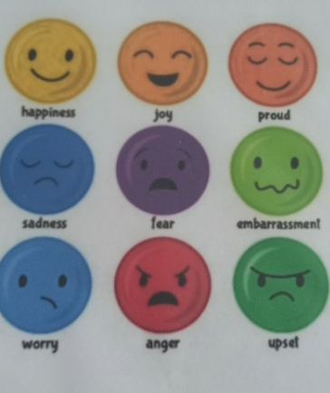

Evan

Mathis

Nathan
1. How are you organized ?
We are organized in three groups, one is the product development,
a second one is the sales and marketing and the third one is the mission control.
And in the center there is the CEO, Olivier.
In Sonarsource teir is no boss all people are quasi equal.
2. What did it feel like ?
My feel like is: happy all the time then: the personnal is very nice.
3. What did you like ?
In this Intership i loved the atmosphere but
I especially loved what I did because I love everything about computers.
This internship allowed me to
validate my choice of profession for later on.
4. why the emoji ?
The emojis of the meetings expresses if one is in a bad or good mood so that if a person is in a bad mood he shows the angry emoji 
Nathan
Yes that confirm my wish because this is super to work on it but I think this is not a work for me.
Evan
yes, it confirms my job because I have always liked computer science.
Mathis
Because this intership was a good element for the futur and in this intership there is my friends.
Nathan
I do this intership because I want to know what my father do and I want do discove a new work.
Evan
I wanted to do this internship to discover this company that I didn't know before and also to be able to validate my professional choice.
Evan
Mathis
Nathan


Jean-Baptiste is our mentor in this intership and there are some photos of him above. 👆